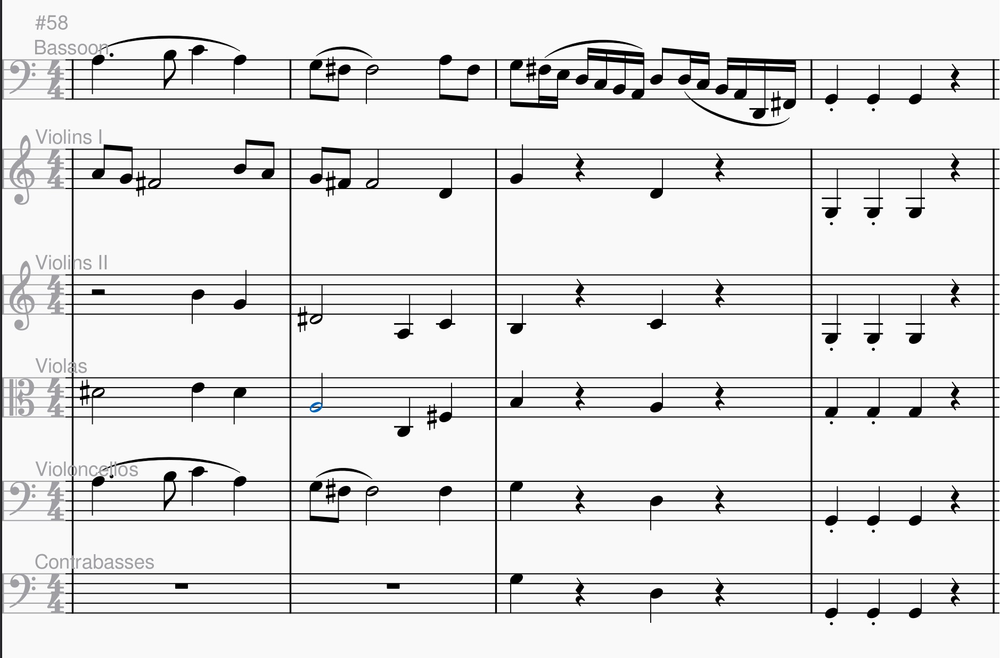
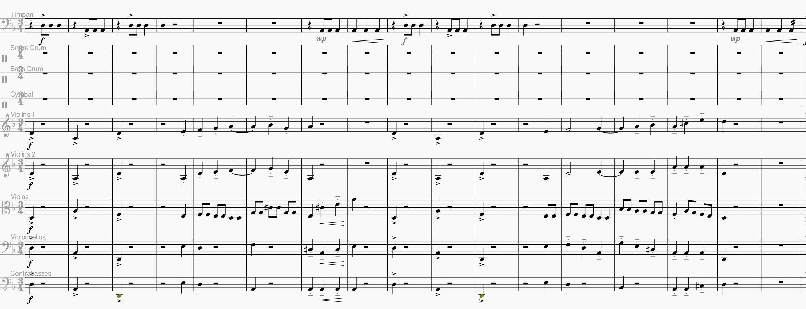
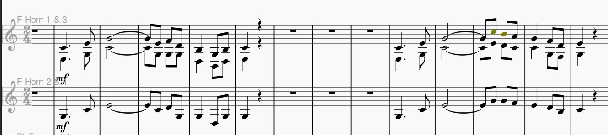

According to a behaviourist, a display of correct behaviour shows that one has learned. This behaviour must be observable, so therefore, cannot depend on our mental processes such as reasoning and memory (Lecture 3).
One key behaviourist theory is Classical Conditioning. Conditioning is the learning process where an unconditioned stimulus which causes an unconditioned response is repeatedly paired with a neutral stimulus so that the neutral stimulus becomes a conditioned stimulus that causes a conditioned repsonse (Lecture 3). Music can be composed to elicit certain feelings in this way. For instance, listen to this famous music:
We can recognize that as the Jaws theme song! Under the classical conditioning theory, we may be naturally scared of sharks. Therefore, sharks are like an unconditioned stimulus, and fear, the unconditioned response. By pairing this music repeatedly with sharks we might learn to experience anxiety and fear when hearing the Jaws theme song on its own, thus making the music become a conditioned stimulus.
Another behaviourist learning theory is Operant Conditioning. This theory is based on the idea that we can change behaviour if we provide rewards or punishments after a behaviour (Lecture 3). A lot of our learning is connected to our emotions, so reinforcements could be positive emotions such as happiness, pride, excitement, whereas punishments can be negative emotions we wish to suppress, like anger, sadness, or fear. In this sense, the sound of certain notes or chords could act like a stimulus that causes reinforcement or punishment. In my experience, as a self-taught composer who has little theoretical background on music, I depend a lot on experimentation to figure out the kind of sound I am looking for. When certain chords or melodies sound bad, I am less likely to use those chords. These nasty feeling I get when listening to my bad chords or melodies can be like a positive punishment, since I will never want to use that chord progression or melody again. An example from my own work is the following accompaniment to a nice bassoon melody.
I personally think that that the D# in the violas sounds awkward and muddy. Therefore, because this sounds bad, I will be less likely to produce music that sounds like this to avoid having to hear this nonsense again.
On the other hand, certain effects I think sound good tend to appear a lot in my pieces. For instance, the sound of the horns and the sound of the timpani sound surprisingly good on Musescore, my music writing software. The chills I get when I listen to their sound is like a positive reinforcement that makes me more liekly to use them in my pieces. Here are some excerpts of some of my compositions that feature these great sounds!
 However, behaviourism cannot explain entirely how one learns to compose. Oftentimes, I am inspired by other composers and the way they use certain instruments or chords to create textures and effects (see Learning as a social experience). This requires using knowledge and memory to learn these patterns (see Cognitivism), which would go against behaviourist views that learning is solely an observable act.
Cognitivism is about using our mental capacities, such as memory or knowledge structures, to learn (Ertmer & Newby, 2013).
According to constructivists, learning happens by making your own meaning from your experiences (Ertmer & Newby, 2013).